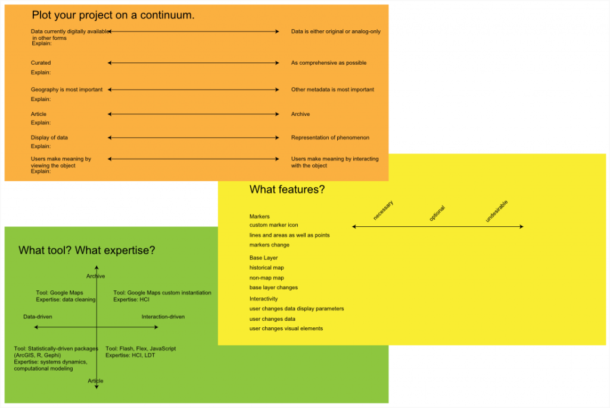

As spatial tools and techniques become more available to a wide audience, the need to explicitly define the type and suitability of the wide range of tools becomes more apparent.


One version of assessing spatial needs as designed by Molly Wilson
Needs assessment is one way of defining spatial services, another is via personas. By designing spatial use cases, we can better understand where possible solutions appear.
Project Manager
Directing the efforts of multiple GIS analysts, likely in a team that involves more than just GIS research. The work is often being done on the same regional area and subject matter.
- Version Reconciliation
- Permissions management
- Output pathway for presentation of content
Research Assistant
Likely following one of three possible avenues of research: Directed research of a single subject under the direction of a faculty member or project; support for multiple, disparate projects in a consulting role; support for multiple, related research as a project level analyst.
- Storage of versioned working copies
- Upload pipeline of discovered content to working directory
Graduate Researcher
A hybrid of the previous two, with the added complication that much work will be highly exploratory and any produced resources (such as georectified maps or lifted features) will presumably be of more questionable quality.
Lecturer
Content consumer, more interested in a lightweight method of presenting spatial data rather than analyzing it. Likely requires a more sophisticated and directed browsing/search experience than the average geoportal user.
- Presentation of multiple layers or datasets
- Storing a pre-designed layer collections
- Web client allowing for layers to be turned on and off as well as simple annotation (either through a custom solution or by developing tools to allow creation of, for instance, a KML referencing the various layers and annotations)
Web Developer
A web developer taking advantage of geospatial assets will likely need to reference geo-rectified maps for use in Google Maps/OpenLayers/Etc APIs for rich Internet applications. This could be a staffmember building a spatially aware site for a Stanford internal organization, or a CS undergraduate working with Polymaps for a class project, and as such a variety of different access levels would be necessary.
- Web Mapping Service
- Tile Service
- Web Feature Service
- API Management through keys and usage limits
Typical User
Your average library patron, who is likely only going to access the spatial data using some kind of web interface. Any content manipulation would be of the kind typically associated with Web 2.0-style interaction, such as that found on Flicker or Google Maps.
- Ability to download high-resolution versions of maps
- Ability to download spreadsheets or image versions of datasets
- Some level of markup and personal cataloguing
Typical ArcGIS User
ArcGIS users will follow the same patterns as they are currently, and their primary change in interaction is through improved serving of bulk data and any calculations that can be off-loaded from the desktop onto some server-level instance.
- Ability to download maps and data in ArcGIS compatible formats (shapefiles, rasters)
Rare Maps Librarian
This position dictates the administrative, library-oriented layer of the geoserver. While not as technical as a geodatabase administrator, significant time from this position, and from representatives of this position, will be spent interacting with data ingest and maintaining of data standards and structures from a library science perspective.
- Individual upload of map or corrected map
- Batch upload of maps
- Batch upload/change of metadata
- Analysis and change pipeline of metadata structure
Geodatabase Administrator
The technical side of maintaining the database. This could also include more intense interaction with the web services layer, depending on availability.
- Modification of schema
- Creation of new users
- Creation of new user groups
- Rights management of users and data